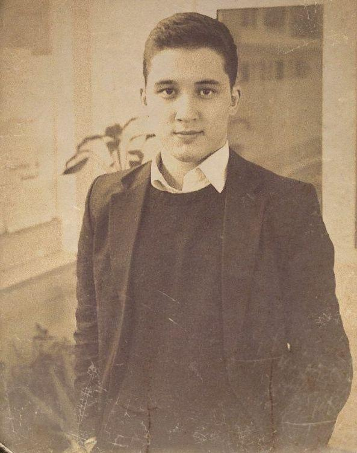

Biz turaly
Biz degende, negizi komandada bir adam. Ozimmen tanystyra ketetin bolsam, atym Muhammed. Kobinese Muhammedamin dep ataidy. Jalpy bul saitty jasap jatqan maqsatym, ozimizdin elimizdegi qazaq zhane agylshyn tilinde bolatyn Web-resurstaryn damytu. Qazirgi uaqutta tek "POSTTAR" maziri bar. Qudai kalasa sitemiz ali damidy degen umittemin, ogan qosa bul saitty damytu maqsatynda komanda alide ulkeip, orkeie beredi degen niettemin.